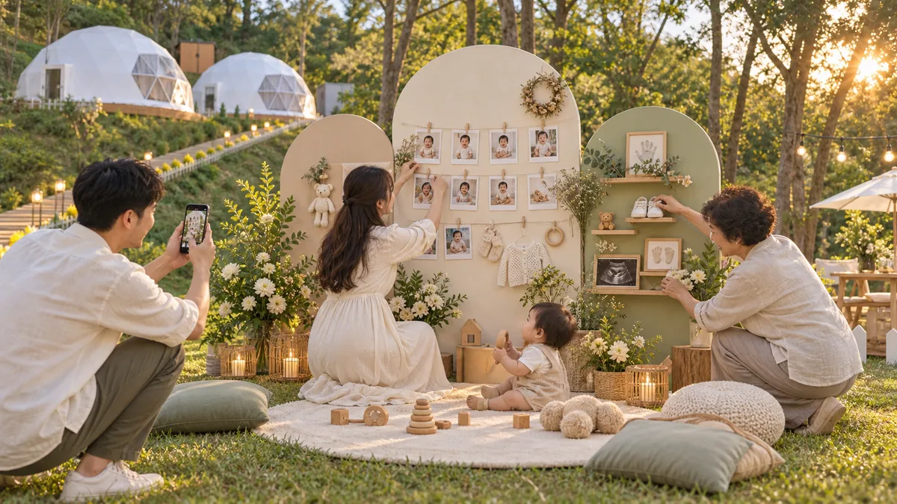
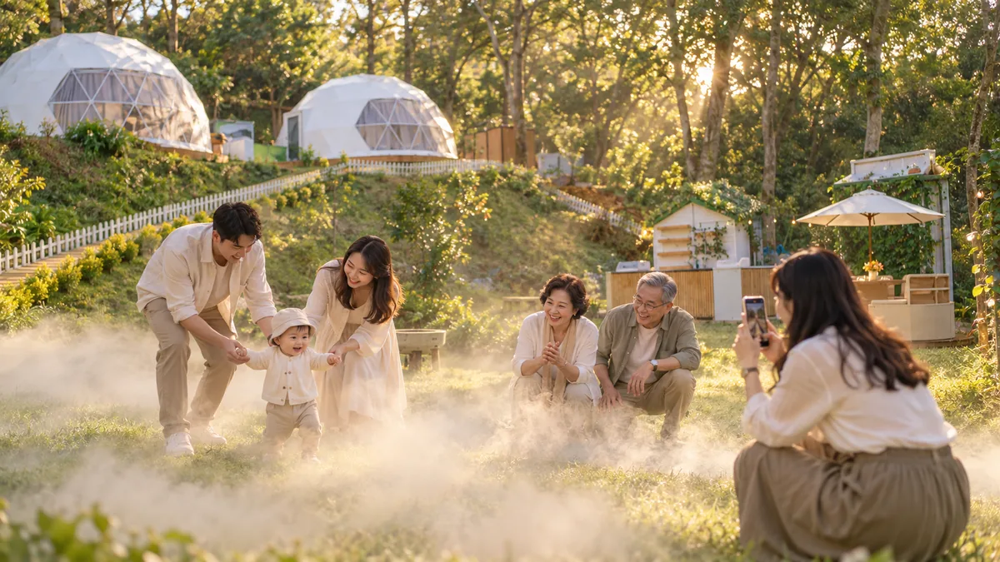
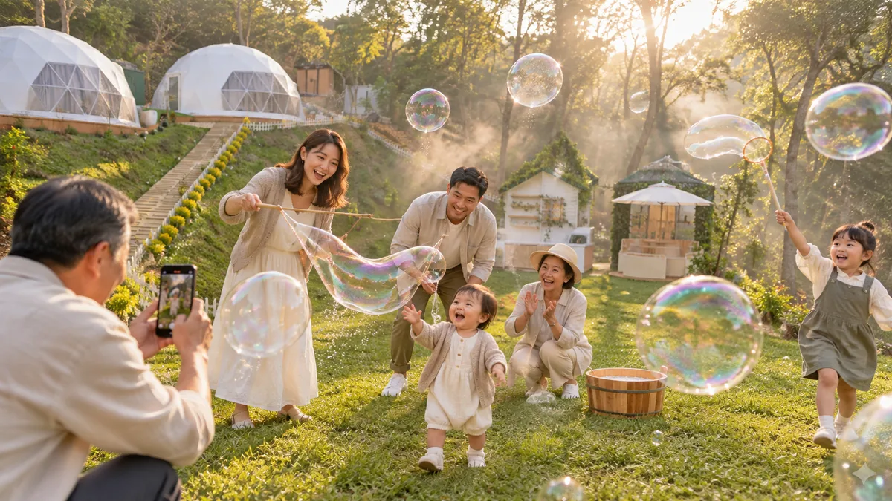
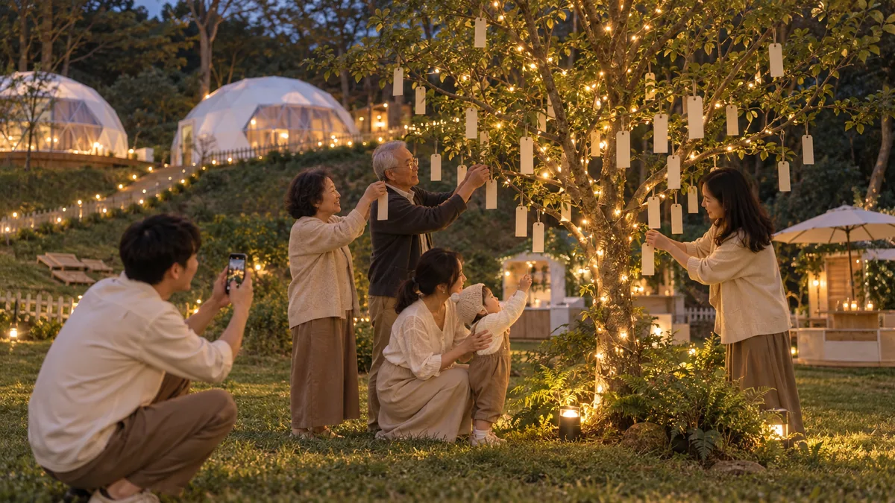
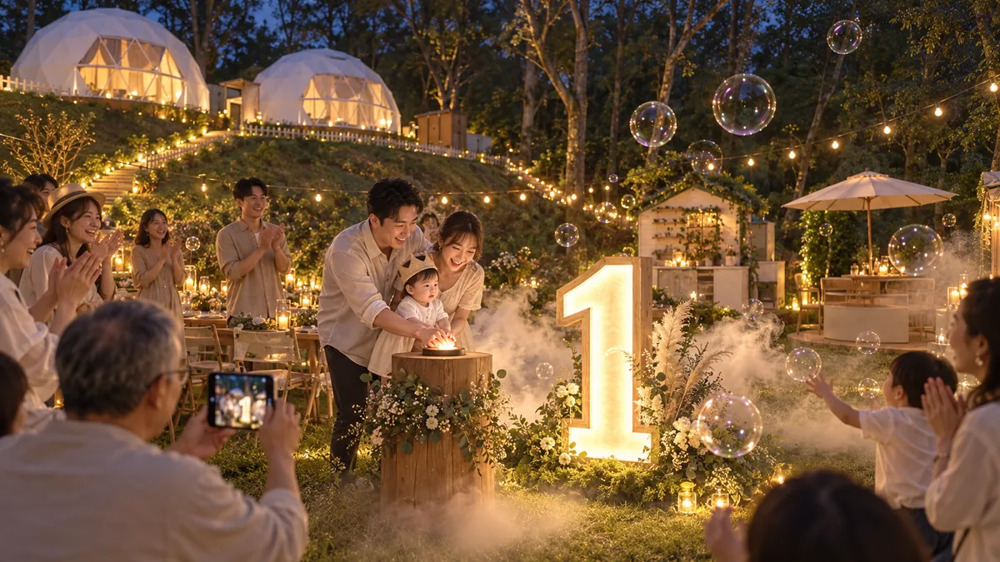
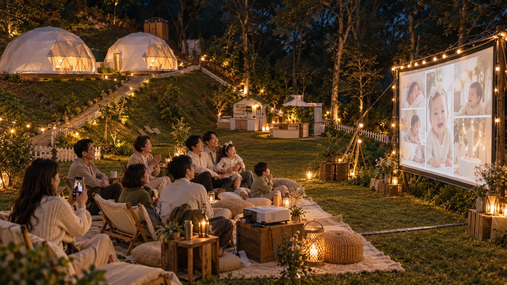
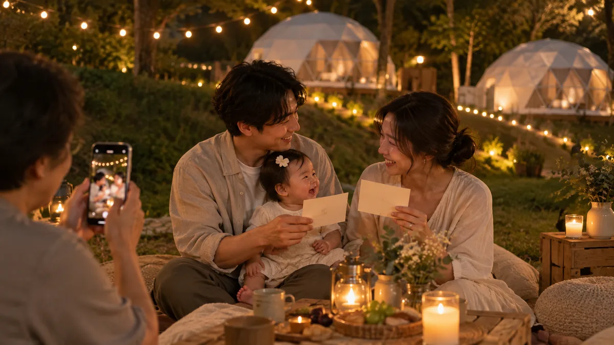
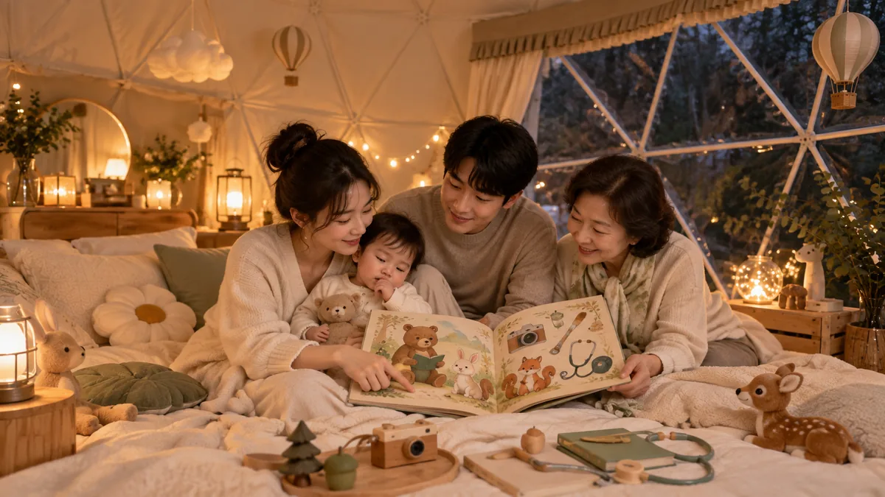
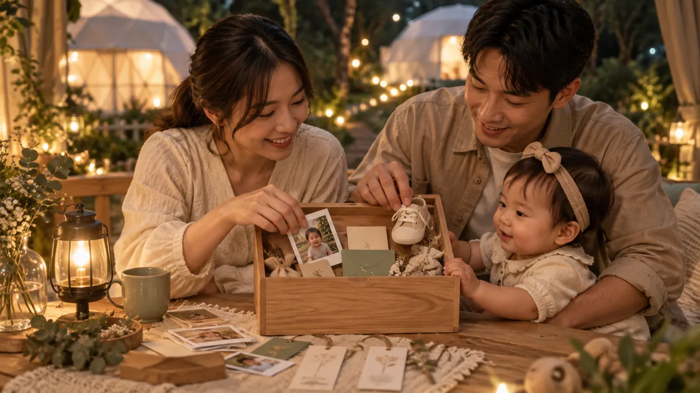
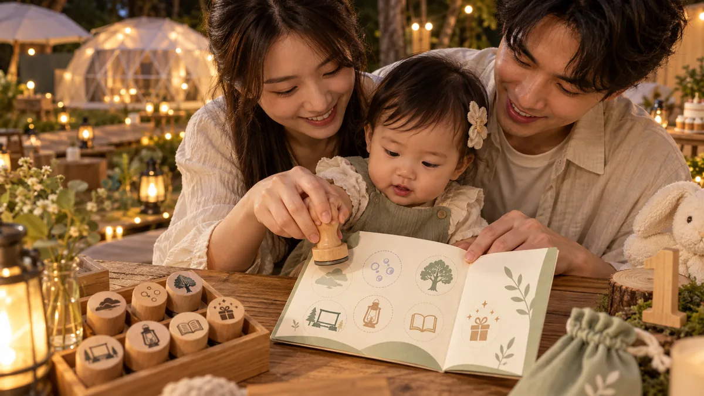

第一天，留給真正的家人時間
下午與晚上刻意不安排攝影師。家人可以放下正式拍攝的壓力，用手機記錄生活化、私密而自然的互動。
JOYFOREST FOREST FIRST BIRTHDAY JOURNEY
寶寶人生第一場森林派對，不只是一場抓周。第一天下午與晚上，家人慢慢佈置回憶、在草地玩耍、寫下祝福、一起點燈與看週歲電影；隔天再進入正式抓周與攝影。

本頁用來公開揪好森目前的抓周住宿體驗構想，並非已完成的固定商品。活動流程、設備、住宿安排、攝影內容與可開放日期，都可能依場地規範、天候、安全評估及試辦結果調整。頁面內所有人物與活動圖片皆為 AI 生成的計畫示意圖，不是實際客戶紀錄，也不是現場完工保證圖。
THE IDEA
整體預計固定使用米白、奶茶、霧綠、暖黃與自然木色。揪好森準備場景與活動用品，家人帶著寶寶的照片、紀念物與想說的話前來。這不是把一場室內抓周搬到戶外，而是從抵達森林開始，慢慢累積儀式、互動與影像。
下午與晚上刻意不安排攝影師。家人可以放下正式拍攝的壓力，用手機記錄生活化、私密而自然的互動。
完整梳洗與準備後進行抓周儀式、家庭合照與正式影像紀錄；實際拍攝內容依最終確認方案安排。
第一天的手機畫面與第二天的正式影像可以相互串接，讓紀念影片同時保有生活感與作品感。
DAY 01 · AFTERNOON TO NIGHT
這一天不追著時間跑，也不需要面對正式鏡頭。家人按照寶寶的作息自由調整，以下是預計最舒服的體驗順序。
認識場地、活動用品、戶外電影安排與手機拍攝方式。
全家一起掛上照片、衣物與紀念品，把固定場景變成寶寶專屬的一歲展覽。
趁光線柔和到草地玩耍，用手機留下寶寶與家人最自然的畫面。
親友把一句祝福寫在書籤上，親手掛到即將亮燈的祝福樹。
家人可自行安排餐點、烤肉或洽詢外燴，這段時間不安排制式流程。
爸媽抱著寶寶按下按鈕，讓數字 1、姓名燈牌與園區燈光一起亮起。
全家一起觀看事前完成的「寶寶第一年回顧影片」；雨天預計移到圓頂帳篷內。
爸媽交換卡片，把祝福、照片與紀念物放進木盒，再以火漆完成封存。
由家人念故事給寶寶聽，替隔天抓周暖身，最後在森林週歲護照蓋下印章。
ELEVEN EXPERIENCES
每一項活動都能由家人自己完成，不需要主持人一直帶流程；第一天用手機記錄，第二天再交給正式攝影。

家人帶來寶寶出生到一歲的照片與紀念物，抵達後一起完成佈置。它會同時成為一歲展覽、家庭合照場景，也是第一天手機影片的開場。
可以展示：出生到十二個月的成長照片、超音波照片、出生手環、第一件衣服、第一雙鞋、喜歡的玩具、有意義的小物，以及姓名、生日、出生身高與體重。
揪好森預計提供固定牆面、層板、掛繩、木夾、相框與柔和燈光；家人只需要準備真正屬於寶寶的內容。

家人依使用說明啟動迷霧設備，讓寶寶在成人陪伴下探索草地。低矮霧氣會讓熟悉的森林出現不同氣氛，也能形成很有特色的手機影片。
迷霧區預計保留清楚動線並控制地面濕滑，設備只使用適合戶外環境的清水霧化方式，不使用舞台煙霧讓寶寶近距離吸入。

揪好森預計準備巨型泡泡工具，家人可以在迷霧森林開啟時一起玩。泡泡適合寶寶、手足與親友共同參與，也能讓手機畫面多一點動態與光線變化。
活動由成人操作泡泡工具，寶寶需留在成人伸手可及的位置；器具使用後放回指定區域。

園區規劃一棵固定的寶寶祝福樹，搭配暖色燈串與可以掛書籤的低枝。揪好森提供固定款祝福書籤，親友寫下給寶寶的一句話，再親手掛到樹上。
晚上亮燈後，整棵樹會成為家人的祝福集合與拍照場景；活動結束後，全部祝福書籤由家長取下帶回收藏。

爸媽抱著寶寶一起按下大型木製按鈕，讓大型數字 1、寶寶姓名燈牌與園區暖色燈串依序亮起；現場可搭配短暫迷霧、巨型泡泡與簡短慶祝音效。
這個驚喜以燈光、聲音、霧氣與泡泡完成，不使用真正煙火、冷焰火或會產生火花的設備。家人可自行操作，也方便用手機完整記錄。
活動前由家長提供出生到一歲的照片、五至十段日常短影片、寶寶姓名與生日、爸媽想說的話，以及一首有意義的音樂。
揪好森預計使用固定視覺風格與 AI 輔助，事先製作約三分鐘的「寶寶第一年回顧影片」。影片在入住前完成，晚上可以直接播放，不需要家人在現場等待製作。

晚上，全家坐在草地的地毯、坐墊與露營椅上，一起觀看寶寶第一年回顧影片。這場電影只屬於家人，不是公開放映，也不需要攝影師或主持人在旁邊帶流程。
揪好森預計提供投影機、布幕、基本音響與觀看區；遇到下雨或強風時，改至圓頂帳篷內播放。

寶寶滿一歲，也代表爸爸媽媽成為父母滿一歲。揪好森預計準備兩張固定設計的紀念卡：「恭喜爸爸滿一歲」與「恭喜媽媽滿一歲」。
爸媽各自寫下一句話，在晚上的家庭時間互相交換。這段活動不需要主持人，也不需要正式錄影，家人可以用自己的方式進行。

揪好森規劃一本專屬抓周繪本《小小探險家的一歲森林》。故事中的寶寶走進森林，遇見書本、相機、畫筆、聽診器等抓周物品，最後留下問題：「明天，小小探險家會選到什麼呢？」
晚上由爸爸媽媽或祖父母讀給寶寶聽。故事內容固定，只替換寶寶姓名標籤，維持完整風格，也避免形成大量客製化作業。

家人把祝福書籤、爸媽卡片、寶寶照片與小紀念物放進森林木盒，完成簡單而有儀式感的封存。
爸爸、媽媽與長輩可以各放入一顆不同顏色的火漆蠟粒。由成人使用電熱火漆爐融化後，把火漆倒在木盒的棉麻緞帶或紙封條上，再共同壓下刻有數字 1、樹葉或年輪的黃銅印章。
木盒可繫上年輪木牌，寫下寶寶姓名、封存日期與預計開啟年份。退房時由家長帶回自行保管；揪好森不提供寄存、十年保管或未來寄送服務。

寶寶會得到一本森林週歲護照。每完成一項體驗，家人就幫寶寶蓋下一個圖案印章：回憶牆、迷霧森林、巨型泡泡、祝福樹、一歲點燈、戶外電影院、睡前故事，以及隔天正式抓周。
週歲護照不使用正式證件格式，而是一份森林探險紀念冊；活動結束後由家長帶回收藏。
PRIVATE FAMILY RECORD
家人可以自在說話、玩耍與休息，不需要一直面對正式鏡頭。入住時預計提供一張簡單的手機拍攝小卡，讓這些生活畫面日後能順利放進紀念影片。
TWO DIFFERENT FILMS
使用寶寶出生到一歲的舊照片、日常影片與爸媽文字，事先製作完成，第一晚在戶外電影院播放。
結合第一天家人自行拍攝的生活化手機畫面，以及隔天正式抓周的照片或影片，整理成完整的週歲故事。
BEFORE ARRIVAL
這份抓周住宿＋攝影整合方案仍在規劃與試辦準備中。想了解預計內容、可能開放日期或價格，請直接聯絡揪好森；正式承接前會依當時可提供的項目逐一確認。
本頁內容與 AI 示意圖片僅供理解計畫方向，不構成固定服務、完工樣式、住宿承諾或價格承諾。